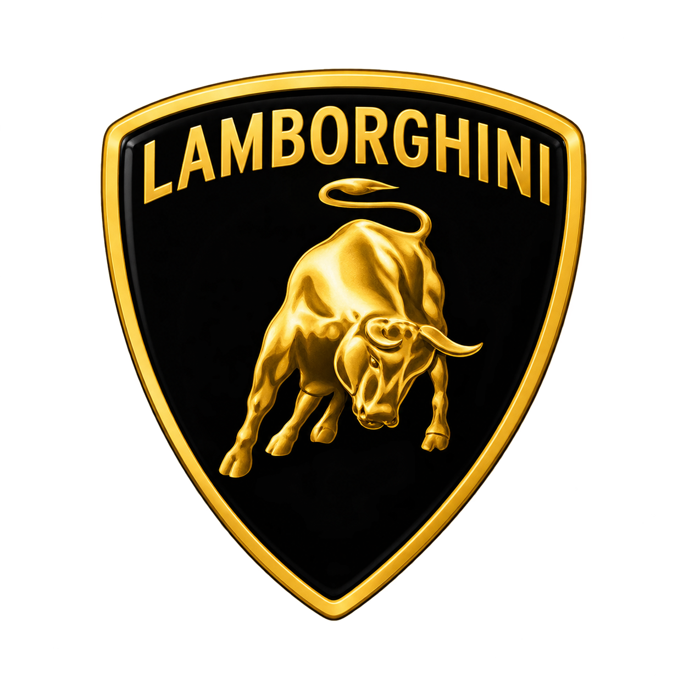

Aprenda criando
Porque o símbolo da lamborghini é um touro?
Ferruccio Lamborghini era apaixonado por touradas e nasceu sob o signo de Touro. Além disso, admirava a força e a imponência desses animais.
Por isso, escolheu o touro como símbolo da Lamborghini, uma imagem que passou a representar a potência, a agressividade e o espírito esportivo de seus carros.

Por que são tão exclusivos?
produção artesanal limitada, desempenho de supercarro e design extravagante e inconfundível.
Potência nas pistas
Os modelos mais potentes da Lamborghininasceram para entregar desempenho nas pistas sua força vem de motores incríveis, tecnológia avançada e muita velocidade.
Modelos Exclusivos
Alguns modelos da Lamborghini são produzidos em poucas unidades, tornando cada carro ainda mais raro, exclusivo e desejado.
Arte da Exclusividade
Alguns modelos da Lamborghini vão além do mercado automotivo, tornando-se símbolos de exclusividade e luxo, admirados por colecionadores.
Banco de dados dos carros